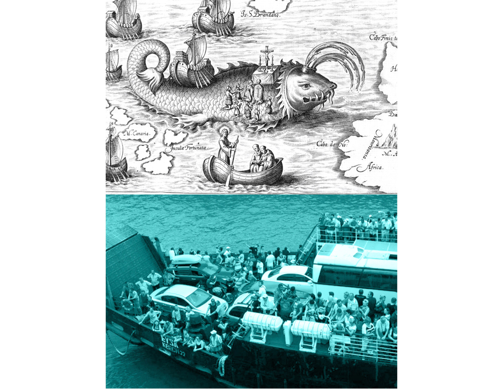

Ticket to Ride
Visual identity for a transportation system covering the entire continent of Europe. Europe can boast a rich historic and cultural heritage, which inspired the project. Medieval culture has a strong and easily recognisable visual style. The elements of that style in combination with CMYK colours to give it a fresh and modern look were used to create a visual identity that is humorous, quirky and distinctly European looking.
